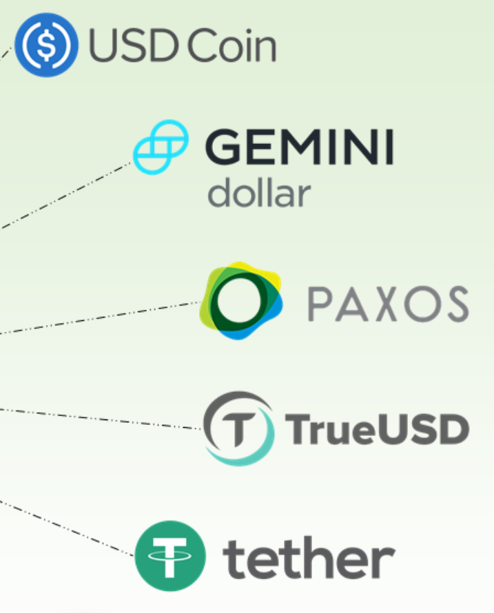
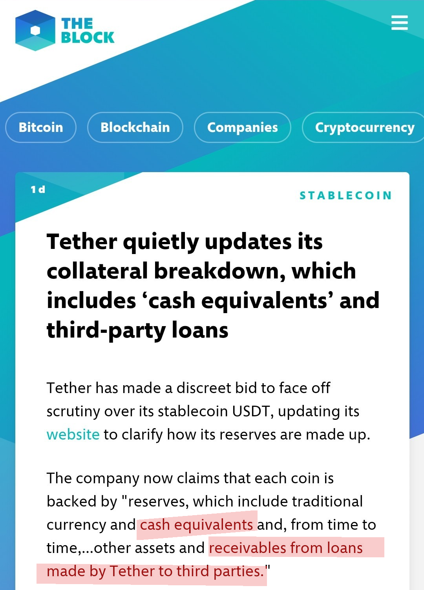
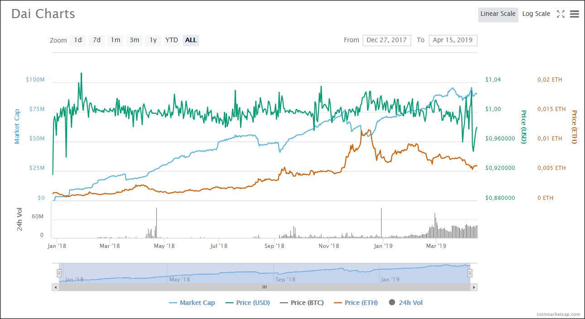
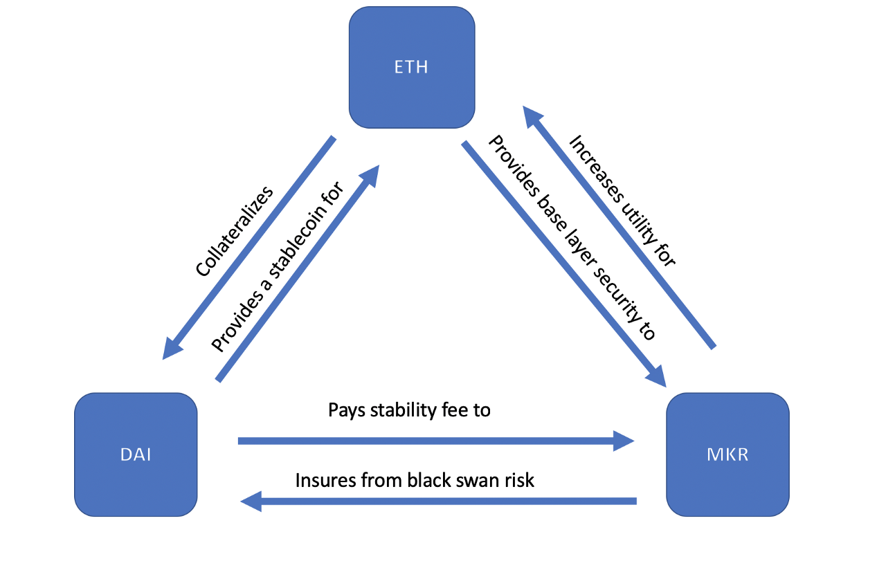
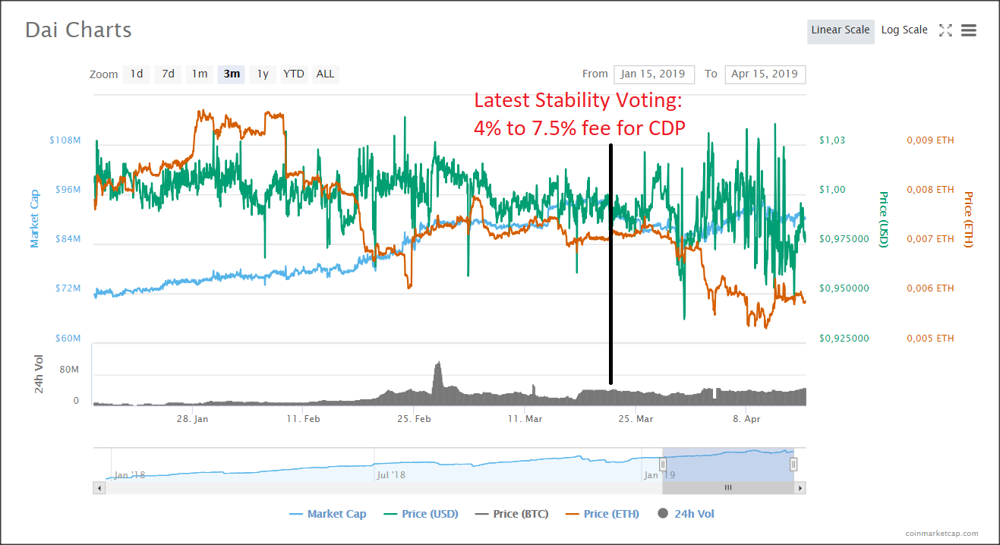
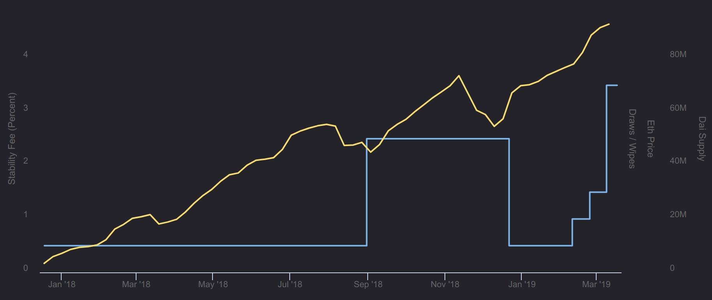
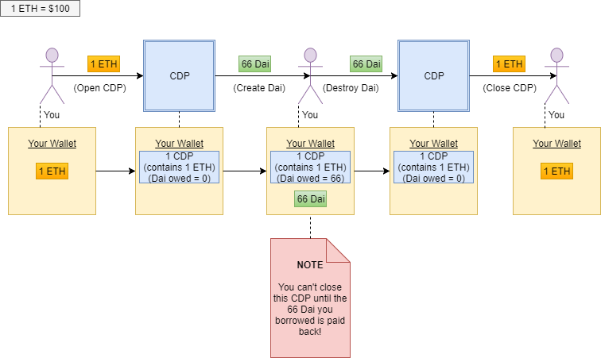

Hannes Gräuler (@lordi) & Florian Drewes (@FLubisch)
Crypto Monday Stuttgart, April 2019
About Me
“You need stablecoins to realize the full potential of blockchain technology.”
→ Majority of use cases require a stable coin.
Fiat-backed stablecoins are IOU tokens and are usually backed by a bank balance.

March 14, 2019

Is there a better way?
Historic Performance

Provide stability by
Sounds fancy, how does it work?
| Paid in | Collateral | |
|---|---|---|
| Bank loan | Euro | Your house |
| CDP | Dai | Ether |
Can we deal with the risks in a decentralized manner?
→ Basically supply is controlled by incentives
Risk #2: Counter Party / Collateral 😕
Use Dai to buy more of the collateral asset.
→ Decentralized margin long
All is good!
→ MKR holders
“We are dedicated to providing material for new people to understand the system in depth. This will be important for successful governance in the project’s future.”

Symbiotic relationship: Dapps need Dai, MakerDAO need Dapps Medium post
Ok, but does it work?


More stability and scalability through diversification
→ Any collateral could be valid. As long as sensible parameters are chosen.
If you squint, MakerDAO looks alot like a central bank.
To overcome the Triffin dilemma, we need a stable currency which is governed globally and independent of any specific state or economic area.
Sound familiar?
If interested, watch this talk: MakerDAO: A New Hope for Financial Reform
Thanks for listening! Any questions?
Twitter/GitHub @lordi
Twitter @FLubisch
poke the Medianizer contract…other contracts can call read on the Medianizer.
Other Dapps like Compound, Gnosis and Augur are using it.
ETH → WETH → PETH → Dai
open – initialize CDPlock – lock up collateraldraw – issue Daifree – reclaim collateralwipe – send back Dai (reduce issuance)shut – close CDPgive – transfer CDP to another ownerbite – trigger liquidation / apply penaltygrab – receive CDP’s collateral while in liquidation